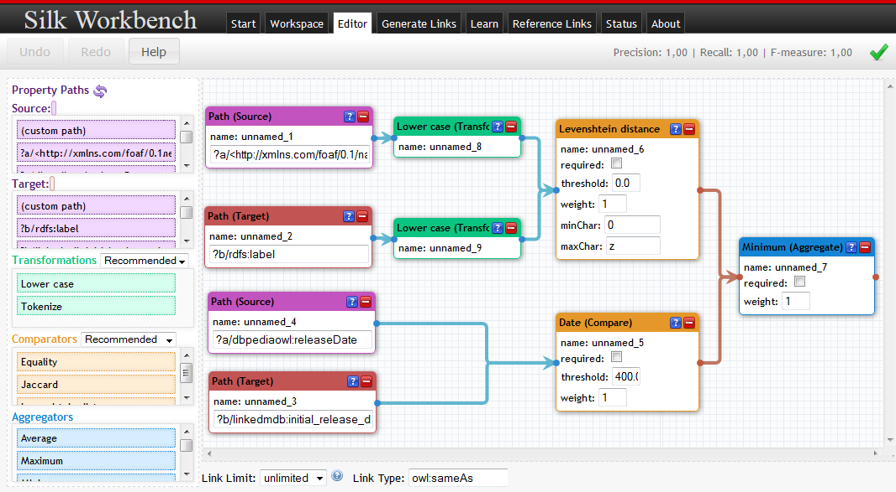

The Silk framework is a tool for discovering relationships between data items within different Linked Data sources.
Data publishers can use Silk to set RDF links from their data sources to other data sources on the Web.
News
- 2014-02-24:Version 2.6 released including a new version of the Workbench that offers a REST API and a Plugin System. Also includes a first version of the Silk Free Text Preprocessor for producing a structured representation for linking from free text.
- 2013-03-20: New article about Silk's active learning features: Robert Isele, Christian Bizer: Active Learning of Expressive Linkage Rules using Genetic Programming. To appear in the Journal of Web Semantics, 2013.
- 2012-08-20: New article about Silk's linkage rule learning features: Robert Isele, Christian Bizer: Learning Expressive Linkage Rules using Genetic Programming. Proceedings of the VLDB Endowment (PVLDB), Vol. 5, No. 11, pp. 1638-1649, August 2012.
- 2012-03-06: Version 2.5.3 released including various improvements and bugfixes.
- 2012-02-21: Webinar about Silk Workbench. The screencast and the slides are available online.
- 2011-11-17: Version 2.5.2 released adding active learning of linkage rules.
- 2011-10-24: Presentation: Robert Isele, Christian Bizer: Learning Linkage Rules using Genetic Programming. 6th International Workshop on Ontology Matching. Bonn, Germany, October 2011.
- 2011-10-21: Version 2.5.1 released including various improvements to the Workbench.
- 2011-10-03: Version 2.5 released adding support for learning linkage rules.
- 2011-07-22: Version 2.4.2 released adding SPARQL/Update output, improved indexing and many improvements to the Silk Workbench.
- 2011-07-01: Version 2.4.1 released with an improved Silk Workbench, various new distance measures and per-comparison thresholds.
- 2011-06-12: Presentation: Robert Isele, Anja Jentzsch, Christian Bizer: Efficient Multidimensional Blocking for Link Discovery without losing Recall. 14th International Workshop on the Web and Databases (WebDB 2011), Athens, June 2011.
- 2011-06-01: Version 2.4 released including the new Silk Workbench, a web application which guides the user through the process of interlinking different data sources.
- 2011-01-31: Version 2.3 released with improved performance employing parallel data loading and a new blocking method.
- 2010-12-20: Version 2.3 beta released offering an increased performance by using a new blocking method.
- 2010-10-08: Presentation: Robert Isele, Anja Jentzsch, Christian Bizer: Silk Server - Adding missing Links while consuming Linked Data. 1st International Workshop on Consuming Linked Data (COLD 2010), Shanghai, November 2010.
- 2010-10-06: Version 2.2 released. This release includes Silk MapReduce which is based on Hadoop and enables Silk to scale out to very large datasets by distributing the link generation to multiple machines.
- 2010-09-15: Version 2.1 released. The main addition is Silk Server which provides a REST interface that handles an incoming data stream of newly discovered entities, while keeping track of known entities. It generates links between the incoming entities based on a set of given Silk Link Specifications.
- 2010-07-02: Version 2.0 released. Reimplementation of the Silk framework in Scala providing improved scalability, optional blocking features and support of the OAEI Alignment format as additional output format.
- 2009-10-27: Presentation about Silk at ISWC 2009: Discovering and Maintaining Links on the Web of Data (Slides).
- 2009-03-02: Version 0.2 released. Adding prematching of data items.
- 2009-02-01: Version 0.1 released. Initial release in Python.
Contents
- About Silk
- Silk Workbench
- Silk Command Line
- Support
- Download
- Version History
- Acknowledgments
- References
About Silk
The Web of Data is built upon two simple ideas: First, to employ the RDF data model to publish structured data on the Web. Second, to set explicit RDF links between data items within different data sources. Background information about the Web of Data is found at the wiki pages of the W3C Linking Open Data community effort, in the overview article Linked Data - The Story So Far and in the tutorial on How to publish Linked Data on the Web.
The Silk Link Discovery Framework supports data publishers in accomplishing the second task. Using the declarative Silk - Link Specification Language (Silk-LSL), developers can specify which types of RDF links should be discovered between data sources as well as which conditions data items must fulfill in order to be interlinked. These link conditions may combine various similarity metrics and can take the graph around a data item into account, which is addressed using an RDF path language. Silk accesses the data sources that should be interlinked via the SPARQL protocol and can thus be used against local as well as remote SPARQL endpoints.
Silk can be used through the Silk Workbench graphical user interface or from the command line. Both variants are based on the Silk Link Discovery Engine which offers the following features:
- Flexible, declarative language for specifying linkage rules
- Support of RDF link generation (owl:sameAs links as well as other types)
- Employment in distributed environments (by accessing local and remote SPARQL endpoints)
- Usable in situations where terms from different vocabularies are mixed and where no consistent RDFS or OWL schemata exist
- Scalability and high performance through efficient data handling (speedup factor of 20 compared to Silk 0.2):
- Reduction of network load by caching and reusing of SPARQL result sets
- Multi-threaded computation of the data item comparisons (3 million comparisons per minute on a Core2 Duo)
- Optional blocking of data items
Silk Workbench
Silk Workbench is a web application which guides the user through the process of interlinking different data sources.
Silk Workbench offers the following features:
- It enables the user to manage different sets of data sources and linking tasks.
- It offers a graphical editor which enables the user to easily create and edit link specifications.
- As finding a good linking heuristics is usually an iterative process, the Silk Workbench makes it possible for the user to quickly evaluate the links which are generated by the current link specification.
- It allows the user to create and edit a set of reference links used to evaluate the current link specification.
Silk Command Line
In addition to the Workbench, Silk provides three different command line applications for executing link specifications:
- Silk Single Machine is used to generate RDF links on a single machine. The datasets that should be interlinked can either reside on the same machine or on remote machines which are accessed via the SPARQL protocol. Silk Single Machine provides multithreading and caching. In addition, the performance is further enhanced using the MultiBlock blocking algorithm.
- Silk MapReduce is used to generate RDF links between data sets using a cluster of multiple machines. Silk MapReduce is based on Hadoop and can for instance be run on Amazon Elastic MapReduce. Silk MapReduce enables Silk to scale out to very big datasets by distributing the link generation to multiple machines.
- Silk Server can be used as an identity resolution component within applications that consume Linked Data from the Web. Silk Server provides an HTTP API for matching entities from an incoming stream of RDF data while keeping track of known entities. It can be used for instance together with a Linked Data crawler to populate a local duplicate-free cache with data from the Web.
Support
Documentation on the Silk Link Discovery Framework is available in the Wiki.
For questions and feedback please use the Silk Google Group.
Download
All stable releases can be downloaded. The framework can be used under the terms of the Apache Software License.
The latest source code is available from the project's Git repository and can be browsed online.
Version History
| Version | Comment | Release Date |
|---|---|---|
| 2.6.0 | New Version of the Workbench REST API Plugin System Silk Free Text Preprocessor |
2014-02-24 |
| 2.5.3 | Various improvements and bugfixes. | 2012-03-06 |
| 2.5.2 | Adding active learning of linkage rules. | 2011-11-17 |
| 2.5.1 | Various improvements to the Workbench. | 2011-10-21 |
| 2.5 | Added support for learning linkage rules. | 2011-10-03 |
| 2.4.2 | SPARQL/Update output Dump file input Improved indexing Many improvements to the Silk Workbench |
2011-07-22 |
| 2.4.1 | Introduces per-comparison thresholds. New data transformations and distance measures including token-based distance measures. Improved Silk Workbench. |
2011-07-01 |
| 2.4 | Added the new Silk Workbench, a web application which guides the user through the process of interlinking different data sources. |
2011-06-01 |
| 2.3 | Improved loading perfomance: Multiple parallel SPARQL queries are executed, while their results are merged on the fly. Improved matching performance: New blocking method offers greatly improved performance. Improved overall performance: Matching tasks are now executed concurrently to loading data instead of waiting for the complete data set to be loaded. |
2011-01-31 |
| 2.2 | Added Silk MapReduce | 2010-10-06 |
| 2.1 | Added Silk Server Added a geographical distance metric by Konrad Höffner (MOLE subgroup of Research Group AKSW, University of Leipzig) Bugfixes |
2010-09-15 |
| 2.0 | Reimplementation of the Silk framework in Scala. Improved scalability and performance. Prematching replaced by a more transparent blocking. Configuration is checked for consistency prior to link generation. Support of the OAEI Alignment format. (Anja and Robert) |
2010-07-01 |
| 0.2 | Added prematching of data items (Julius). The Silk 0.2 language specification is still available and Silk 0.2 framework can be downloaded from GoogleCode. |
2009-03-02 |
| 0.1 | Initial Release of the Python version of the Silk framework (Julius and Chris) | 2009-02-01 |
Acknowledgments
This work was supported in part by Vulcan Inc. as part of its Project Halo and by the EU FP7 project LOD2 - Creating Knowledge out of Interlinked Data (Grant No. 257943).
References
- Robert Isele: Learning Expressive Linkage Rules for Entity Matching using Genetic Programming. Dissertation, 2013.
- Robert Isele, Christian Bizer: Active Learning of Expressive Linkage Rules using Genetic Programming. Journal of Web Semantics, Vol. 23, pp. 2-15, DOI 10.1016/j.websem.2013.06.001, 2013.
- Robert Isele, Christian Bizer: Learning Expressive Linkage Rules using Genetic Programming. Proceedings of the VLDB Endowment (PVLDB), Vol. 5, No. 11, pp. 1638-1649, August 2012.
- Robert Isele, Christian Bizer: Learning Linkage Rules using Genetic Programming. 6th International Workshop on Ontology Matching. Bonn, Germany, October 2011.
- Robert Isele, Anja Jentzsch, Christian Bizer: Efficient Multidimensional Blocking for Link Discovery without losing Recall. 14th International Workshop on the Web and Databases (WebDB 2011), Athens, June 2011.
- Robert Isele, Anja Jentzsch, Christian Bizer: Silk Server - Adding missing Links while consuming Linked Data. 1st International Workshop on Consuming Linked Data (COLD 2010), Shanghai, November 2010.
- Anja Jentzsch, Robert Isele, Christian Bizer: Silk - Generating RDF Links while publishing or consuming Linked Data. Poster at the International Semantic Web Conference (ISWC2010), Shanghai, November 2010.
- Julius Volz, Christian Bizer, Martin Gaedke, Georgi Kobilarov: Discovering and Maintaining Links on the Web of Data. International Semantic Web Conference (ISWC2009), Westfields, USA, October 2009.
- Julius Volz, Christian Bizer, Martin Gaedke, Georgi Kobilarov: Silk – A Link Discovery Framework for the Web of Data . 2nd Workshop about Linked Data on the Web (LDOW2009), Madrid, Spain, April 2009.
- Christian Bizer, Tom Heath, Tim Berners-Lee: Linked Data - The Story So Far. In: International Journal on Semantic Web & Information Systems, Vol. 5, Issue 3, Pages 1-22, 2009.